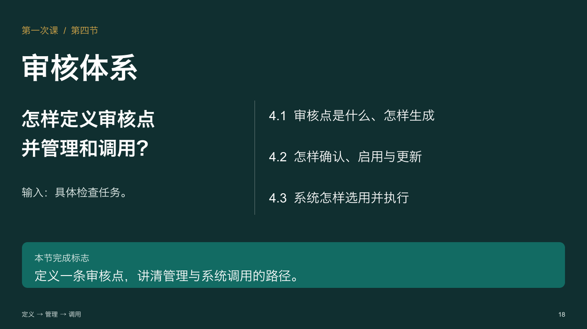
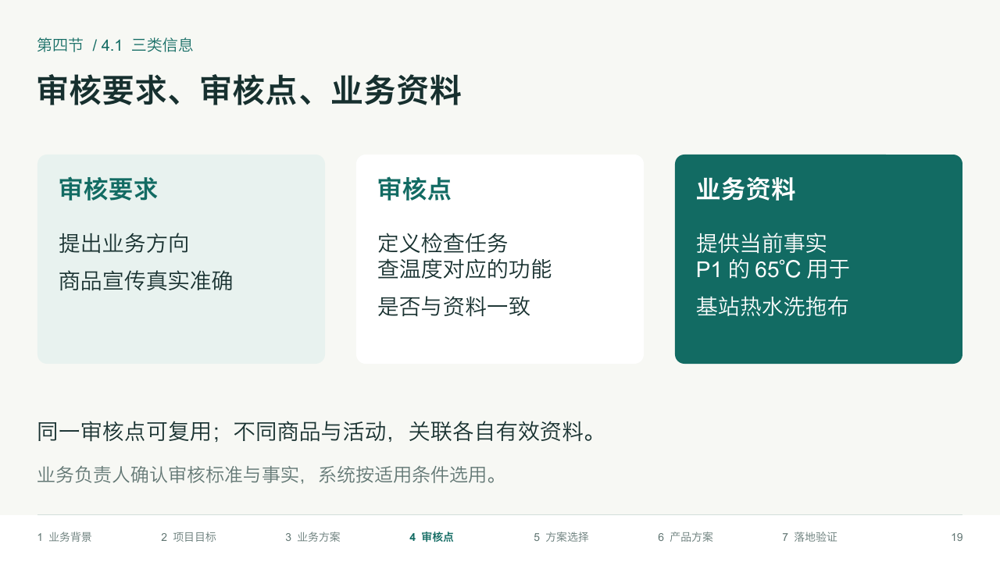
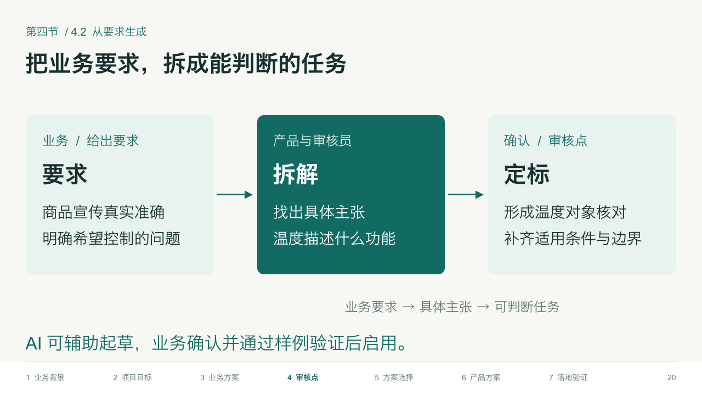
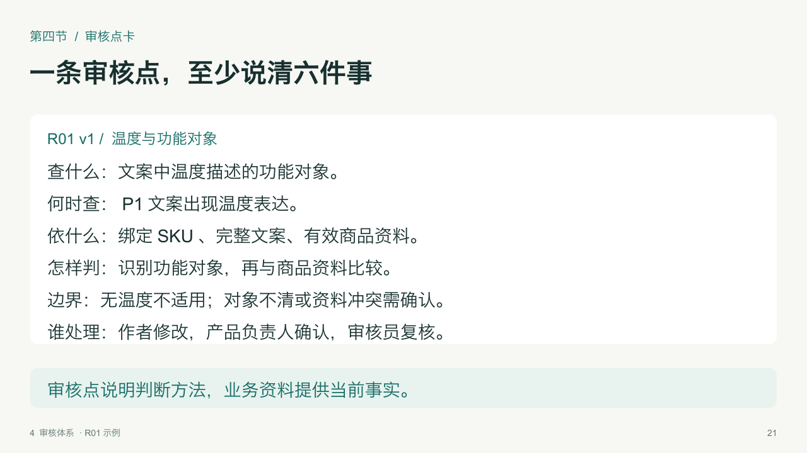
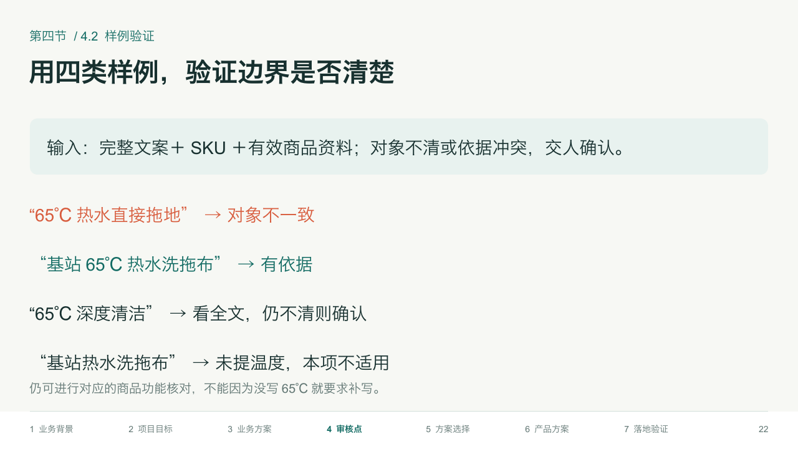
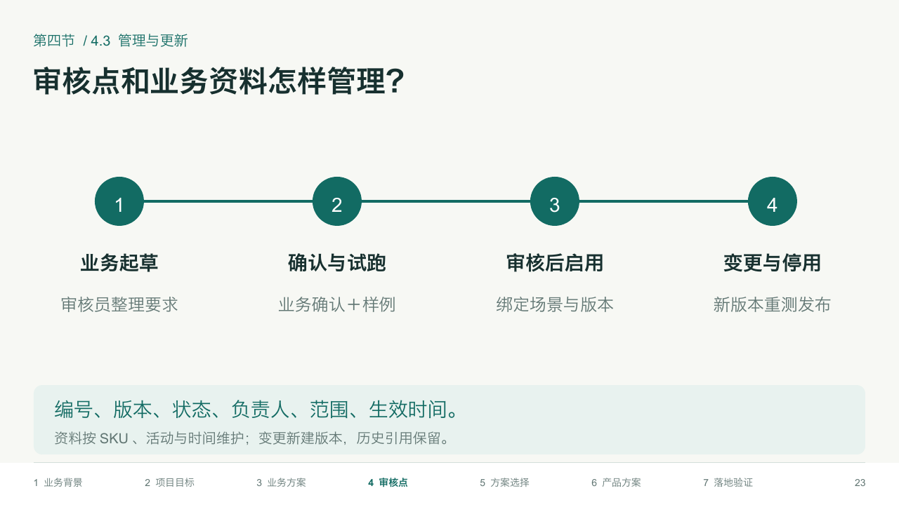
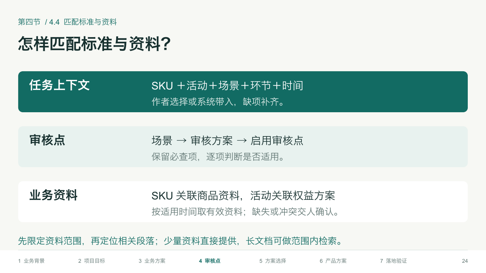
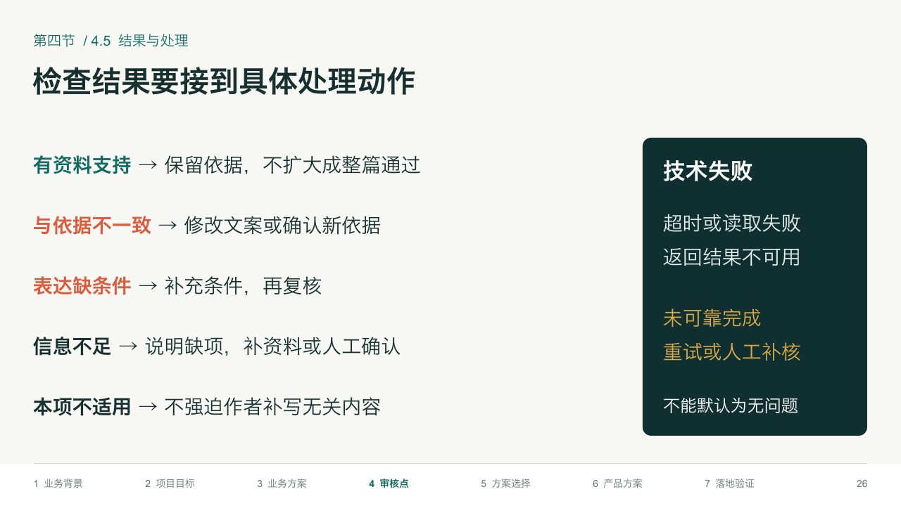

第一次课 · 第四节：审核点定义管理与调用
讲清审核点是什么、如何从业务要求生成、怎样确认启用与维护版本，以及系统如何匹配标准资料、调用并处理结果。 共9页（P18—P26），含章节标题页和逐页教师备注。
P18 · 章节标题
P19 · 三类信息
P20 · 从要求生成审核点
P21 · 审核点卡
P22 · 样例与边界
P23 · 管理与版本
P24 · 匹配标准与资料
P25 · 调用输入与输出P26 · 结果与处理
复用结构强化版原生模板。画面由实际PPTX渲染；案例、方案与期望判断为教学推演，尚未实测。讲解细节在教师备注中。